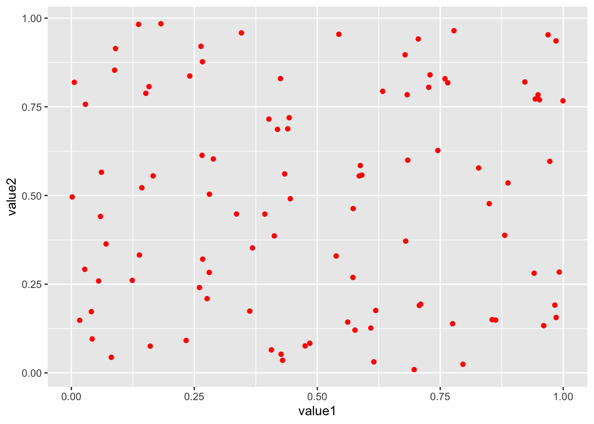
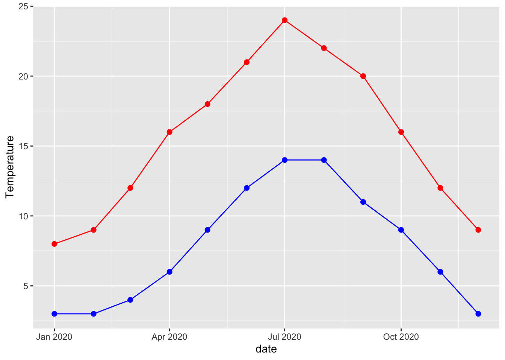
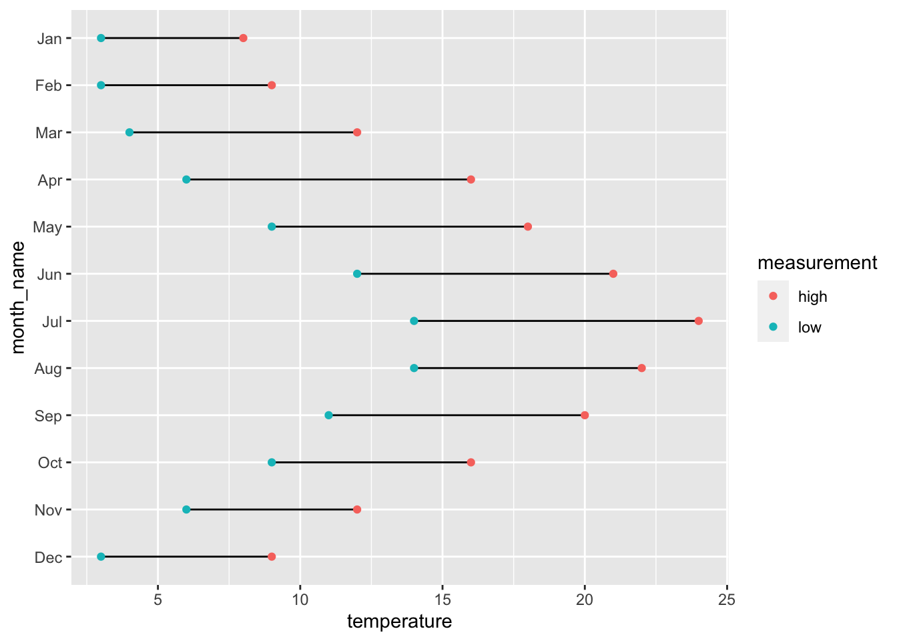

library(ggplot2)
library(dplyr)
library(tidyr)
library(lubridate)Dumbbell Plots
Tweets
Intro
How to create dumbbell plots with ggplot2
Impress clients, communicate complex insights simply and up your data vis game.
#1
Dumbbell plots are a great way of communicating information that can be grouped then split into two points.
I used one for last weeks TidyTuesday
But making them can be a little tricky.
I can show you how step-by-step.
#2
Dumbbell plots can be created using 2 ggplot2 building blocks: geom_point and geom_line.
So let’s start building from the ground up with some examples in each before combining to make a dumbbell plot.
#3
1. geom_point
Plots in ggplot2 start with the ggplot function. We then add + successive layers with geometry functions before customising the appearance further.
geom_point is used to create scatter plots and other point charts.
# Create dummy data
set.seed(1001) # so random numbers can be replicated
dummy <- tibble(time_period = 1:100,
value1 = runif(100, 0, 1),
value2 = runif(100, 0, 1),
group1 = sample(c("a", "b", "c"), size = 100, replace = TRUE))
print(dummy)# A tibble: 100 × 4
time_period value1 value2 group1
<int> <dbl> <dbl> <chr>
1 1 0.986 0.156 b
2 2 0.413 0.386 b
3 3 0.430 0.0356 b
4 4 0.419 0.686 c
5 5 0.427 0.0526 c
6 6 0.888 0.535 c
7 7 0.00610 0.819 a
8 8 0.0812 0.0439 c
9 9 0.289 0.603 c
10 10 0.765 0.818 b
# … with 90 more rows# Some plots using geom_point
ggplot(data = dummy) +
geom_point(aes(x = value1, y = value2))ggplot(data = dummy) +
geom_point(aes(x = time_period, y = value1))ggplot(data = dummy) +
geom_point(aes(x = group1, y = value1))#4
Notice I placed the x and y variables inside the aes function.
I found aesthetics a little hard to understand when learning - you read lots of talk of mapping variables and visual cues which screams jargon to me.
But I think there is an easier way to understand them.
#5
Anything on a chart (a line, point, colour, shape, size etc) which changes with the data, place inside aes().
Anything which doesn’t vary with data (a colour, shape, size, etc), place outside aes().
It’s easier to see with an example.
#6
In plot 1 colour is placed inside aes so the colour varies with the data. Here it corresponds to the group1 value since colour = group1.
In the second plot colour is placed outside aes. The colour is red regardless of the data values.
# Colour inside aes - it varies with the data
# Colour depends on the value of group1
ggplot(data = dummy) +
geom_point(aes(x = value1, y = value2, colour = group1))# Colour outside aes - it does not vary with the data
# Colour will always be red here
ggplot(data = dummy) +
geom_point(aes(x = value1, y = value2), colour = "red")
#7
2. geom_line
geom_line works similarly to geom_point.
You can add 1 or more lines and easily combine with geom_point.
# Some more dummy data
celsius <- tibble(date = as.Date(paste0("2020-", 1:12, "-01")),
high = c(8, 9, 12, 16, 18, 21, 24, 22, 20, 16, 12, 9),
low = c(3, 3, 4, 6, 9, 12, 14, 14, 11, 9, 6, 3)) |>
mutate(month_name = month(date, label = TRUE))
# Simple line chart
ggplot(data = celsius) +
geom_line(aes(x = date, y = high))# Multiple lines
ggplot(data = celsius) +
geom_line(aes(x = date, y = high), colour = "red") +
geom_line(aes(x = date, y = low), colour = "blue") +
labs(y = "Temperature")# Lines and points
ggplot(data = celsius) +
geom_line(aes(x = date, y = high), colour = "red") +
geom_line(aes(x = date, y = low), colour = "blue") +
geom_point(aes(x = date, y = high), colour = "red", size = 2) +
geom_point(aes(x = date, y = low), colour = "blue", size = 2) +
labs(y = "Temperature")
#8
The dummy celsius dataset was in what is known as wide format.
We can put this into long format using pivot_longer from tidyr. Long format will be important for our dumbbell plot. There is now a row for high and for low for each month.
celsius_long <- pivot_longer(celsius,
cols = c(high, low),
names_to = "measurement",
values_to = "temperature")
print(celsius)# A tibble: 12 × 4
date high low month_name
<date> <dbl> <dbl> <ord>
1 2020-01-01 8 3 Jan
2 2020-02-01 9 3 Feb
3 2020-03-01 12 4 Mar
4 2020-04-01 16 6 Apr
5 2020-05-01 18 9 May
6 2020-06-01 21 12 Jun
7 2020-07-01 24 14 Jul
8 2020-08-01 22 14 Aug
9 2020-09-01 20 11 Sep
10 2020-10-01 16 9 Oct
11 2020-11-01 12 6 Nov
12 2020-12-01 9 3 Dec print(celsius_long)# A tibble: 24 × 4
date month_name measurement temperature
<date> <ord> <chr> <dbl>
1 2020-01-01 Jan high 8
2 2020-01-01 Jan low 3
3 2020-02-01 Feb high 9
4 2020-02-01 Feb low 3
5 2020-03-01 Mar high 12
6 2020-03-01 Mar low 4
7 2020-04-01 Apr high 16
8 2020-04-01 Apr low 6
9 2020-05-01 May high 18
10 2020-05-01 May low 9
# … with 14 more rows#9
From long format we can replicate the last plot with similar code.
Notice to get the correct colours I have created a named vector called chart colours and passed it to scale_colour_manual.
This approach even throws in a legend.
Now we are ready for the dumbbell plot.
chart_colours <- c("high" = "red", "low" = "blue")
ggplot(data = celsius_long) +
geom_line(aes(x = date, y = temperature, colour = measurement)) +
geom_point(aes(x = date, y = temperature, colour = measurement), size = 2) +
labs(y = "Temperature") +
scale_colour_manual(values = chart_colours)#10
3. Dumbbell plots
We know about geom_point, geom_line, aes and long format. We can put this together to make a dumbbell plot.
Let’s start with the points.
#11
Our groups will be month name, values temperature and the 2 points will be high and low.
The first stab at it is not bad but the months go from December to January.
We can sort this by reordering the month name factor level.
# First stab at the points
ggplot(data = celsius_long) +
geom_point(aes(x = temperature, y = month_name, colour = measurement)) # Fix the order of the months so it goes jan -> dec
reverse_months <- celsius_long |>
pull(month_name) |>
unique() |>
rev()
celsius_long <- mutate(celsius_long,
month_name = factor(month_name, levels = reverse_months))
ggplot(data = celsius_long) +
geom_point(aes(x = temperature, y = month_name, colour = measurement)) #12
Next we add the lines.
Here we use the group argument and pass it to aes. This will group the lines by month_name. The other aes arguments are the same.
The first attempt is ok but the lines overlap the points. Not to worry, we can swap them.
# Add the lines
ggplot(data = celsius_long) +
geom_point(aes(x = temperature, y = month_name, colour = measurement)) +
geom_line(aes(x = temperature, y = month_name, group = month_name))# Reorder so the points are on top of the line
ggplot(data = celsius_long) +
geom_line(aes(x = temperature, y = month_name, group = month_name)) +
geom_point(aes(x = temperature, y = month_name, colour = measurement))
#13
Finally we can make some tweaks to make the chart look better. We could do plenty more but the objective here was to learn about dumbbell plot, not the ins and outs of good design.
# Some tweaks to make it look nicer
ggplot(data = celsius_long) +
geom_line(aes(x = temperature, y = month_name, group = month_name)) +
geom_point(aes(x = temperature, y = month_name, colour = measurement), size = 4) +
scale_color_manual(values = chart_colours) +
theme_minimal() +
labs(x = "Temperature",
y = "",
title = "Dumbbell plot of dummy temperatures")#14
TL;DR
1. Dumbbell plots are a great way to communicate insights. These can be created with ggplot2
2. You can combine the geometries geom_line and geom_point to achieve this.
3. You need to know a bit about aesthetics and long format data.
#15
Thanks for reading, if you liked this thread follow me @neilgcurrie for mainly R and data science stuff (though I make no promises).
See the README file to get the code for this thread and others.